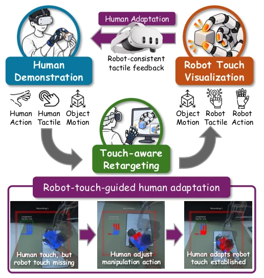
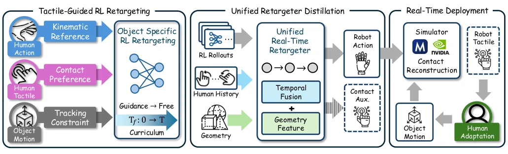
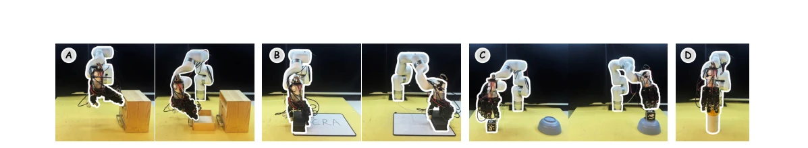
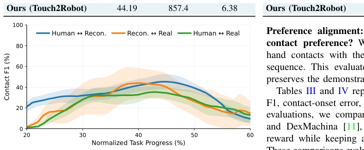
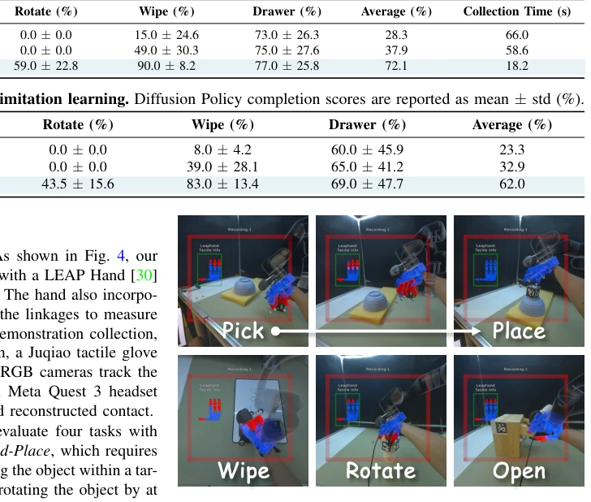
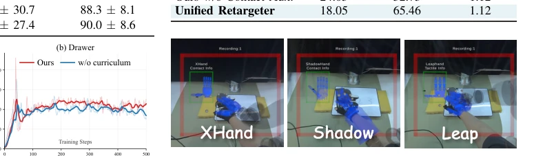
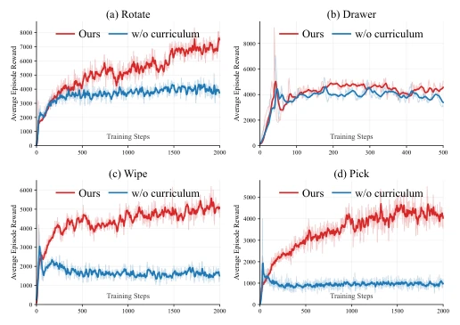
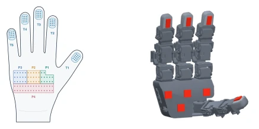
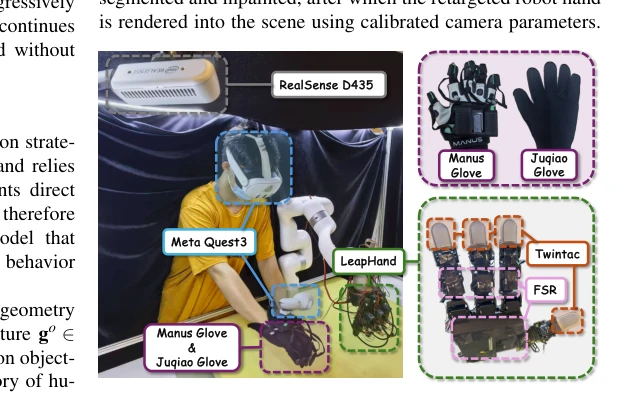

This paper delivers a potent remedy to the pain points of "humanoid robot imitation learning". Although there is abundant human demonstration data, if the hand shape is incorrect, grasping fails. Touch2Robot attempts to allow humans to see "how the robot hand would touch" during the demonstration phase; this idea is very compelling. However, the 44% tactile F1 score indicates there is still a gap between simulation and reality, and this approach relies on RL teacher distillation; does this count as "teaching humans how to teach simulation using simulation"? Will this indirect supervision introduce new errors? Although the replay success rate doubled, the user study sample was only 10 people, isn't that a bit too few? In short, it is a decent engineering attempt, but do not expect it to directly solve all embodiment gaps, the simulation-to-reality gap remains, and the FPR of tactile reconstruction is relatively high, potentially misleading humans.
The core contradiction lies in: human demonstration data is cheap but unusable (hand shape mismatch), while collecting directly on robots is too expensive. Existing methods such as DexCap [14] or ARCap [12] can visualize retargeted actions, but cannot see if contact is stable. It is like teaching someone to drive a manual transmission car, only letting them watch the steering wheel, not whether the clutch pedal is fully depressed. Touch2Robot aims to solve the problem of "missing contact feedback", allowing humans to know during demonstration whether the robot hand will slip or crush objects, without needing to run a physical robot. This goes further than simple motion mapping [9, 10], directly focusing on contact topology, attempting to find a balance between scalable and embodiment, filling the blind spots of existing retargeting methods [11, 23].

Fig. 1: Touch2Robot overview. Human motion, tactile mea- surements, and object motion condition object-specific RL policies, which are distilled into a unified real-time retargeter. Retargeted robot configurations and tracked object poses are synchronized in simulation to reconstruct target-hand contacts, enabling online human adaptation.
Overall, it proceeds in three steps. First, train an object-specific RL Teacher, inputting human actions, tactile data, and object motion, outputting robot actions, with tactile preference matching (contact preference) and object tracking added to the reward function. There is a "guided-to-free curriculum" here, letting the policy slowly learn free dynamics. Second, distill these Teachers into a unified real-time Retargeter, inputting object geometry and human history, directly predicting robot configuration and contact state. Finally, during demonstration, the robot hand and object predicted by the Retargeter synchronize in simulation, visualizing the contact state to humans (VR), and humans adjust actions based on this feedback. This is equivalent to installing a "robot tactile simulator" in the human brain, achieving a closed loop, and supporting cross-hand shapes.

Fig. 2: Touch2Robot pipeline. Human motion, tactile preference, and object motion train object-specific RL teachers to learn physically feasible robot interactions. Their behaviors are distilled into a unified, geometry-conditioned retargeter. During collection, simulator-based contact reconstruction provides target-hand feedback for online human adaptation.

Fig. 5: Touch2Robot tasks. We evaluate (A) Pick-and-Place, (B) Board Wiping, (C) Object Rotation, and (D) Drawer Opening, covering grasp establishment, contact transitions, and sustained-contact interactions.

Fig. 7: Temporal contact agreement. Pairwise contact F1 among human tactile preference, reconstructed target-hand contact, and real-robot tactile measurement.
Tested on 4 real tasks (grasp, rotate, wipe, drawer). Baselines compared offline mapping and pure visual feedback. Mainly looking at replay success rate and downstream Diffusion Policy effect. Touch2Robot increased the replay success rate from 37.9% to 72.1%, downstream policy improved by 29.1 percentage points, the effect is significant. Tactile reconstruction F1 44.2%, although not perfect, it is better than ConTrack and DexMachina. User study also shows humans find the feedback useful. Ablation experiments prove curriculum and geometry conditions are important. And cross-hand shape experiments show generalization potential, although quantitative validation is still in the future.

Fig. 6: VR visualization. Real-time robot motion and tactile feedback during human demonstration collection.

Fig. 9: Cross-hand applicability. The same human manipu- lation is retargeted to three dexterous hand in VR.

Fig. 8: Effect of the dynamics curriculum. Average episode reward during training with and without the curriculum.

Fig. 10: Human tactile-region. Fig. 11: Leap tactile-region.
其他图片Other Figures

Fig. 4: Touch2Robot platform. The system integrates human motion and tactile sensing, object tracking, VR-based robot- touch feedback, and a tactile-enabled dexterous robot for closed-loop demonstration collection and evaluation.